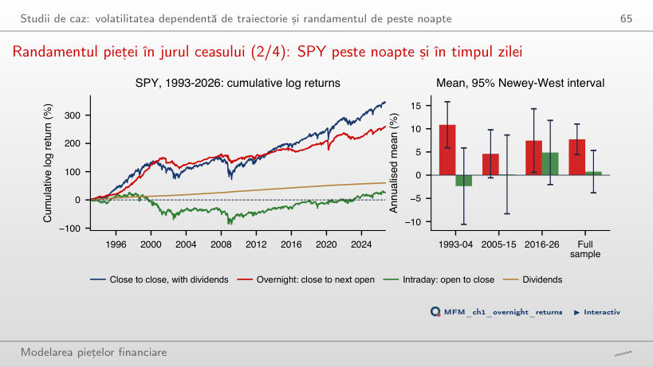

În stînga este slide-ul din curs, în dreapta aceeași figură, calculată în browser din aceleași date. Butonul ▶ modifică parametrul pas cu pas.
Prețuri și randamente · Distribuție și cozi · Dependența și mecanismele ei · Persistența și limitele inferenței · Volatilitatea din deschidere, maxim, minim și închidere · Randament ajustat la risc și drawdown · Studii de caz: volatilitatea dependentă de traiectorie și randamentul de peste noapte
Prețuri și randamente
Cinci piețe: prețuri și randamente logaritmice zilnice

Răspuns
În 1,4% din zile, față de 25,5% din zile pentru S&P 500 și 60,8% pentru Bitcoin. Sub distribuția Normală cu volatilitatea zilnică a EUR/RON, 0,28%, o variație de peste 1% ar apărea doar în 0,03% din zile. Cea mai slabă zi a Bitcoin, 12 martie 2020, are randamentul logaritmic −46,5%: prețul se înmulțește cu e−0,465, deci scade cu 37,2%.
Distribuție și cozi
Faptul 2, cozi groase: histograme și grafice cuantilă–cuantilă (QQ plot-uri)

Răspuns
Nu neapărat. Potrivirea centrului nu garantează potrivirea cozilor: histograma este dominată de centrul distribuției, unde se află aproape toate zilele. Pentru S&P 500, frecvența empirică a lui |z| > 4 este 0,67%, față de 0,006% sub distribuția Normală și aproximativ 0,84% sub Student-t la ν = 2,8 afișat inițial. QQ plot-ul și estimarea Hill, α̂ = 3,07 la k/n = 2,5%, oferă diagnostice suplimentare. Nici potrivirea unui singur prag nu validează întreaga coadă.
Hill plot-urile pentru cele cinci piețe

Răspuns
Nu. Intervalul i.i.d. aproximativ de 95%, [3,43; 5,01], include valori sub și peste 4; intervalul construit cu SE bootstrap pe blocuri include și el 4. În plus, Hill plot-ul Bitcoin nu este stabil în jurul pragului ales. Excesul de kurtosis empiric pozitiv nu stabilește dacă momentul populației este finit. La același prag, α = 4 este în afara intervalelor de 95% pentru celelalte patru piețe; concluzia rămîne condiționată de aproximarea Pareto a cozii și de pragul k/n.
Faptul 3: asimetria cîștig/pierdere în date

Răspuns
Diferența nu este semnificativă la pragul de 5%: Δ = 3,15 − 2,97 ≈ 0,18 pp, iar intervalul bootstrap pe blocuri de 95%, [−0,12; 0,49] pp, conține 0. O diferență punctuală pozitivă și predominanța pierderilor pe alte piețe nu înlocuiesc inferența pentru S&P 500. Dintre cele cinci piețe, numai EUR/RON are un interval care exclude 0: Δ ≈ −0,17 pp, cu intervalul [−0,35; −0,07] pp.
Dependența și mecanismele ei
Faptele 1 și 6: randamente necorelate, dar dependente

Răspuns
Benzile sînt punctuale și aproximative. Sub ipotezele de calibrare, aproximativ 5 depășiri din 100 sînt așteptate în medie chiar sub ipoteza nulă; aceasta nu este o limită garantată. Pagina găsește 20 de depășiri cu banda i.i.d. și 7 cu banda robustă. Autocorelația mică nu implică independență: autocorelațiile lui |rt| și rt2 sînt pozitive la toate cele 100 de laguri. Validitatea benzilor rămîne condiționată de ipotezele asupra momentelor și dependenței.
Faptul 5: intermitența în date

Răspuns
Fereastra mai lungă netezește în general seria, dar reacționează mai lent la schimbări persistente ale volatilității. Factorul de anualizare nu elimină efectul lungimii ferestrei. Nu însumăm volatilități: recalculăm abaterea standard din observațiile fiecărei ferestre. Pentru EUR/RON, media volatilității pe ferestre de 63 de zile scade de la 5,8% înainte de iulie 2013 la 2,0% după; în curs, testul de ruptură în varianță datează schimbarea la 27 iunie 2013, cu volatilitatea subeșantioanelor de 6,6% înainte și 2,2% după.
Faptul 4: gaussianitate prin agregare

Răspuns
|z| ≈ 0,10 este sub 1,96, deci nu respingem ipoteza nulă prin acest diagnostic. Nerepingerea nu demonstrează nici normalitatea, nici independența. La h = 60, pragul este depășit pentru S&P 500 (excesul de kurtosis scade de la 10,9 la 1,6, nh = 154, z = 4,1), BET-TR (z = 3,0) și EUR/RON (z = 20). Calibrarea z = (K̂ − 3)/√(24/nh) este asimptotică și presupune observații i.i.d. din distribuția Normală sub ipoteza nulă.
Faptul 9: leverage effect

Răspuns
Nu. Comparația arată o asociere descriptivă între grupul randamentului curent și mărimea randamentului următor. Grupurile de aceeași frecvență nu au neapărat același |rt|. L(1) = −0,12, cu z ≈ −5,4 folosind SE robustă, nu înlocuiește o comparație la aceeași mărime a șocului. Pe EUR/RON semnul este inversat: L(1) = +0,10 (z = 2,5).
Faptul 10: volumul și volatilitatea evoluează împreună

Răspuns
Nu. La fereastra de 250 de zile, corelația este 0,25 pentru S&P 500, cu intervalul [0,22; 0,28], și 0,39 pentru Bitcoin, cu intervalul [0,34; 0,44]. Intervalele susțin o asociere pozitivă, nu o explicație cauzală. Rangurile nu elimină factorii comuni sau cauzalitatea inversă. Pentru Bitcoin, volumul raportat de burse include wash trading.
Persistența și limitele inferenței
Faptul 8: scăderea lentă a ACF pentru |rₜ|

Răspuns
Nu. Pentru S&P 500, ACF a lui |rt| este aproximativ 0,27 la lagul 1, 0,22 la lagul 20 și 0,09 la lagul 100. La laguri mari depășește curba exponențială ajustată aici pe lagurile 1–20. Tiparul este compatibil cu memoria lungă, dar poate apărea și din rupturi ale nivelului volatilității. Nici estimarea Whittle local d̂ ≈ 0,48 nu exclude singură această explicație; pe cele cinci piețe, estimatorii semiparametrici dau d̂ între 0,35 și 0,50.
Efectul Taylor

Răspuns
Nu. Maximul pe grila de puteri folosită de pagină este la δ = 1,75, pentru lagul 1. Diferența față de δ = 2 este aproximativ 0,005, dar pagina nu estimează incertitudinea acestei diferențe. Poziția maximului este descriptivă; nici superioritatea, nici egalitatea în populație nu rezultă din grafic. Maximul se mută cu lagul: δ = 2 la lagul 2, 1,5 la lagul 5 și 1,25 la lagul 20.
Volatilitatea din deschidere, maxim, minim și închidere
Deschiderea, maximul, minimul și închiderea (OHLC) unei zile

Răspuns
Da. Dacă închiderea este egală cu deschiderea, randamentul intraday este zero, dar range-ul ht − lt poate fi mare. Randamentul close-to-close poate rămîne nenul dacă a existat un salt overnight. Pentru log-prețul modelat prin mișcare browniană fără drift, E[(ht − lt)2] = 4 ln 2 · σ2, unde σ2 este varianța pe durata sesiunii. În modelul ideal fără salturi overnight, estimatorul Parkinson al varianței are eficiență relativă de circa 5 față de close-to-close.
Estimatorii de volatilitate aplicați pe S&P 500

Răspuns
Parkinson folosește numai range-ul intraday și nu include explicit randamentul overnight. Yang–Zhang îl include, deci aceeași explicație nu i se aplică. Pentru indicele S&P 500, slide-urile arată și problema stale open. Mediile pe ferestre de 21 de zile, în 2008–2026, sînt 16,4% pentru close-to-close, 13,0% pentru Parkinson și 13,9% pentru Yang–Zhang. Nici eficiența, nici netezimea nu impun o medie mai mică; indicatorul de netezime din pagină este un raport al varianțelor variațiilor zilnice ale estimărilor.
Randament ajustat la risc și drawdown
Drawdown-uri pe piețe

Răspuns
+131%. Indicele a scăzut de la 1 565,15 (9 octombrie 2007) la 676,53 (9 martie 2009), adică cu 56,8%, iar după o scădere x revenirea la vîrf cere o creștere de 1/(1 − x) − 1. Drawdown-ul pe scară logaritmică, −ln(1 − 0,568) = 0,84, nu este creșterea necesară: e0,84 − 1 = 131%.
Risc și randament pe piețe

Răspuns
Nu. Graficul compară eșantioane diferite și serii care nu au același tratament al dividendelor sau aceeași monedă. Includerea dividendelor în BET-TR este corectă pentru randamentul total; comparația cu un indice S&P 500 fără dividende este neomogenă. Separat, folosirea rf = 0 în locul unei rate fără risc pozitive mărește raportul Sharpe calculat. Din 2015, pagina dă Sharpe 1,38 pentru BET-TR, 1,05 pentru Bitcoin și 0,73 pentru S&P 500, cu SE individuale de aproximativ 0,29 sub ipotezele formulei i.i.d. Normale. Inferența asupra diferențelor cere și covarianța estimărilor.
Studii de caz: volatilitatea dependentă de traiectorie și randamentul de peste noapte
Studiu de caz (3/4): VIX observat și VIX estimat din randamentele S&P 500

Răspuns
Cu 5 randamente, R2 pe test este 0,695, față de 0,863 cu 1.000 de randamente. Valoarea 0,947 este R2 la antrenare pentru istoricul de 1.000 de randamente. Ponderea de aproximativ 20% a primelor 5 zile în nucleul de 1.000 de zile nu este R2: pagina renormalizează nucleele și reestimează β. Calculul pentru VIXt folosește rt, rt−1, …; nu este o prognoză a VIXt făcută la t−1.
Randamentul pieței în jurul ceasului (2/4): SPY peste noapte și în timpul zilei

Răspuns
|t| = 0,33 nu depășește pragul asimptotic 1,96. Estimarea pozitivă nu este suficient de precisă pentru a respinge media zero; nerespingerea nu dovedește că media este zero. Separat, media overnight este 7,7% pe an (t = 4,6), iar aproximativ 91% din randamentul logaritmic cumulat al prețului SPY provine din overnight; dividendele, 1,8% pe an, sînt contabilizate distinct.
Prețuri de închidere zilnice pînă la 18 septembrie 2026: S&P 500, BET-TR, Bitcoin, aur spot și VIX din EODHD; EUR/RON: cursul de referință BNR. Studiul de caz 2: SPY (deschidere, închidere, închidere ajustată) și barele Bitcoin de 5 minute, din EODHD. Randamente logaritmice, fiecare serie pe propriul calendar.